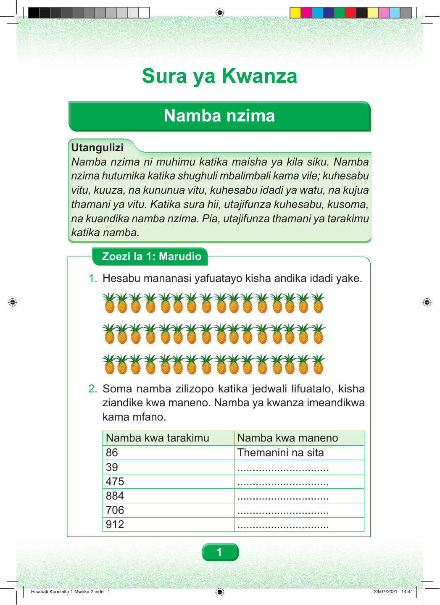

Sura ya Kwanza Namba nzima Utangulizi Namba nzima ni muhimu katika maisha ya kila siku. Namba nzima hutumika katika shughuli mbalimbali kama vile; kuhesabu vitu, kuuza, na kununua vitu, kuhesabu idadi ya watu, na kujua thamani ya vitu. Katika sura hii, utajifunza kuhesabu, kusoma, na kuandika namba nzima. Pia, utajifunza thamani ya tarakimu katika namba. Zoezi la 1: Marudio 1. Hesabu mananasi yafuatayo kisha andika idadi yake. 2. Soma namba zilizopo katika jedwali lifuatalo, kisha ziandike kwa maneno. Namba ya kwanza imeandikwa kama mfano. Namba kwa tarakimu Namba kwa maneno 86 Themanini na sita 39 .............................. 475 .............................. 884 .............................. 706 .............................. 912 .............................. 1 Hisabati Kundirika 1 Mwaka 2.indd 1 23/07/2021 14:41